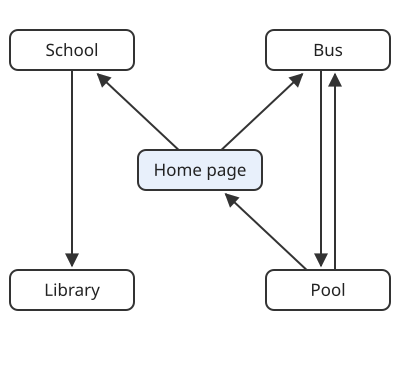

Media overview
All images, audio files and videos of this app with their source and licence.
Images

images/baum-zimmer.svg© CC-BY-4.0Used on: What you need here

images/galerie-1.svg© CC-BY-4.0Used on: What you need here

images/busnetz-de.svg© CC-BY-4.0Used on: From tree to graph

images/busnetz-en.svg© CC-BY-4.0Used on: From tree to graph

images/freunde.svg© CC-BY-4.0Used on: From tree to graph

images/drei-netze.svg© CC-BY-4.0Used on: From tree to graph

images/galerie-2.svg© CC-BY-4.0Used on: From tree to graph

images/pfeile.svg© CC-BY-4.0Used on: Edges with a direction

images/stadtfuehrer-de.svg© CC-BY-4.0Used on: A graph made of pages

images/stadtfuehrer-en.svg© CC-BY-4.0Used on: A graph made of pages

images/startseite-de.svg© CC-BY-4.0Used on: A graph made of pages

images/startseite-en.svg© CC-BY-4.0Used on: A graph made of pages

images/entwurf-de.svg© CC-BY-4.0Used on: Class 7b's town guide

images/entwurf-en.svg© CC-BY-4.0Used on: Class 7b's town guide

images/galerie-3.svg© CC-BY-4.0Used on: Class 7b's town guide